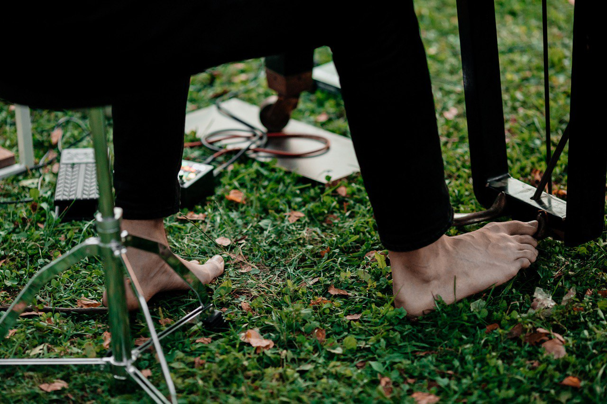
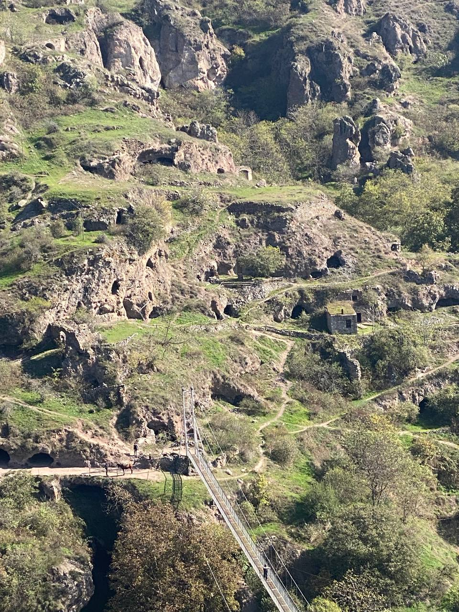

.jpg)
.jpg)
.jpg)
.jpg)
.jpg)

Дима Устинов и его команда проводят музыкальные сессии, на которых люди без опыта за несколько часов начинают играть вместе.

Музыкант, композитор и саунд-артист, который много лет собирает ансамбли из людей, никогда не игравших музыку.
Создал augmented piano — проект, где акустический рояль соединяется с электроникой и светом. Его интересует, как через звук и совместное действие между людьми возникает связь и меняется состояние группы.
его взглядМне интересно, как музыка может лечить — и человека, и то, что происходит между людьми


Мир всё менее предсказуем: ценнее не следовать идеальному плану, а слышать, что происходит, и действовать в моменте. Музыкальная импровизация тренирует это напрямую — и начать может каждый. Музыка работает раньше слов, опыта и ролей; это общий язык, который уже есть у всех.
«Главный навык сейчас — не играть по правилам, а совершать творческое действие в моменте».— Дима Устинов

В работе используются простые и непривычные инструменты — акустические и электронные. Никто не приходит с готовым преимуществом, поэтому и руководитель, и новичок оказываются в одной точке старта. Ошибиться здесь не страшно: важнее пробовать, слушать и включаться в общее движение.
Я бегал за музыкой, а не она за мной
Перестаёшь чувствовать себя отдельно от других
Это была динамическая медитация
Музыка создаёт пространство, чтобы прожить что-то своё
За день прожил целую жизнь
Хотелось выстраивать отношения из какого-то центра
Музыка ведёт, а ты бережно проживаешь важное


Инструменты, звук, настройку и сопровождение берём на себя — никто не остаётся один на один с незнакомым инструментом.
Проведём событие полностью или встроимся в уже существующую программу — зависит от задачи, формата и состава группы.

Днём участники проходили групповые практики, а вечером собирались на музыкальные сессии. К концу второго дня расходиться уже не хотелось: группа вошла в общий ритм и захотела оставаться в нём дольше.
«На третий день на сессию заглянули трое наблюдателей миссии ООН из Венгрии. Они сказали, что это звучит как их народная музыка, и не поверили, что играют люди, которые впервые взяли инструменты в руки».
У нас нет готового универсального пакета. Напишите, кто вы, какая у вас группа и зачем вам такая сессия, — мы предложим формат под ваш запрос.
Написать нам